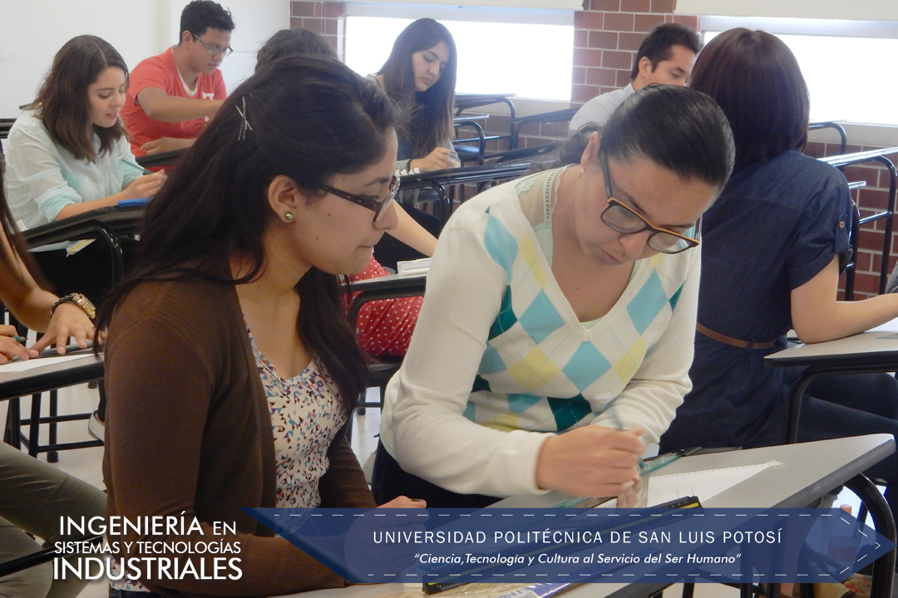
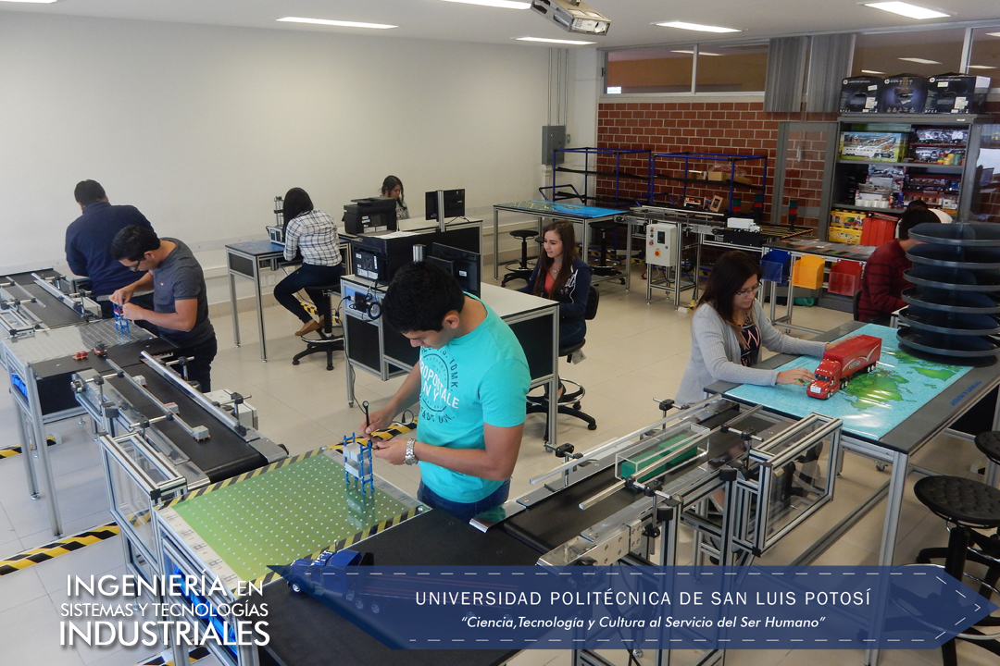
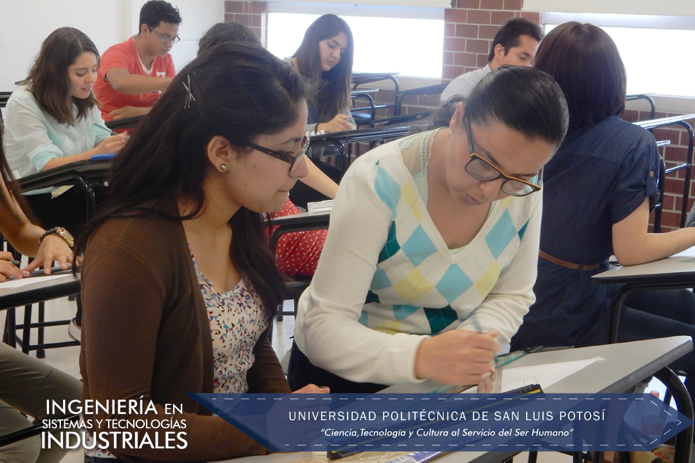
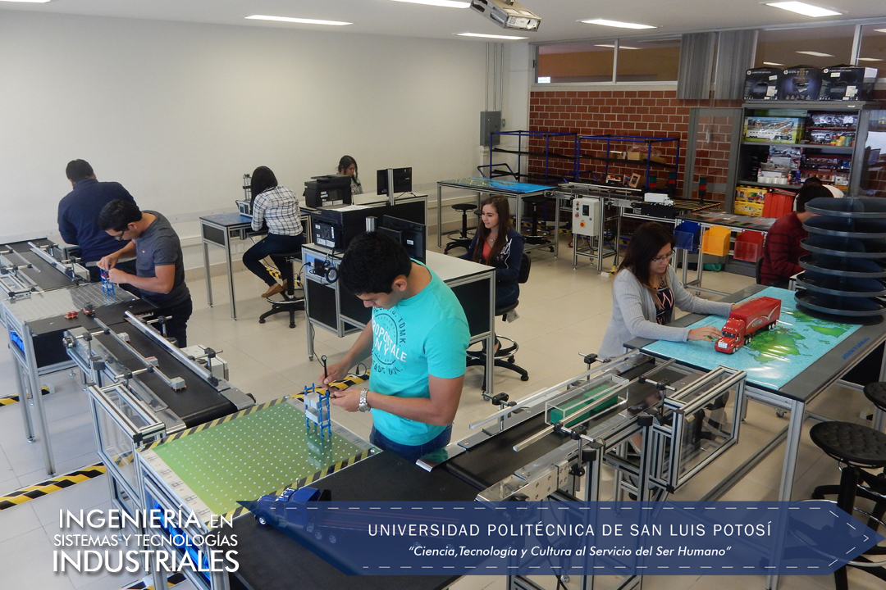

Descripción carrera:
En Ingeniería en Sistemas y Tecnologías Industriales se busca preparar a los alumnos en las 5 grandes áreas que comprende la Ingeniería Industrial como lo son: Producción, Calidad, Suministros de Materiales, Productividad y Seguridad, todo bajo un enfoque sistémico y pertinente, con la transmisión del conocimiento más actual en razón de metodologías, herramientas y software aplicable a los procesos de producción y de servicios. Además de la tecnología, busca que los alumnos se preparen para administrar y dirigir al personal.
De inicio y como parte de la preparación en Ingeniería, las materias que cursará el alumno se basan primordialmente en el razonamiento matemático y de las ciencias, en el uso de tecnologías de la información y comunicación y en la creación de hábitos de estudio y psicosociales que faciliten su desarrollo académico y laboral.
Conforme avanzan en su carrera, se incorporan cada vez más materias específicas del campo de la Ingeniería en sistemas y tecnologías industriales, para finalizar con materias especializadas en los conocimientos más modernos; siendo materias integradoras que permitan el logro de competencias requeridas en el campo laboral; incluyendo el inglés. Al finalizar, los alumnos de ISTI deben realizar un período de residencia profesional (480 hrs. mínimo), donde puedan vivir prácticamente lo que se vio en las aulas; aunque en muchas de las materias de ISTI se deben realizar proyectos finales de aplicación en la industria que permiten un acercamiento vivencial temprano en su carrera; al igual que al hacer prácticas profesionales.
Los alumnos más destacados y con buen nivel de inglés, pueden acceder desde sexto semestre a la industria mediante el programa coop; un programa dual cooperativo de Formación Universidad – Empresa.
Se tiene también la actividad continua del capítulo #736 del Institute for Industrial Engineers (IIE, http://www.iienet2.org/), donde los alumnos organizan actividades de desarrollo académico, de responsabilidad social y de fondeo económico para asistir y organizar congresos nacionales (Puebla, Monterrey, Saltillo, Mérida, Villahermosa, Aguascalientes, Hermosillo, Ciudad Madero) y congresos y visitas internacionales (Cancún, Montreal, San Antonio, Houston y Nashville).
Infraestructura / Recursos
LABORATORIOS ISTI
Certificaciones:
Auditor Interno ISO/TS 16949 (Automotive Industry Action Group)
Core Tools (Automotive Industry Action Group)
Auditor Interno ISO 14000 e ISO 18000 (STPS)
Lean Practitioner (IIE)
Green Belts Six Sigma (STPS)
Cursos SAP y MINITAB
Logros / Distinciones:
1er lugar Nacional de ensayo técnico por parte de la Región México del Institute of Industrial Engineers (IIE) en Cd. Madero, Tamps. y en SLP (2014 y 2015)
3er. Lugar en la Competencia Internacional de ensayo técnico por parte del Institute of Industrial Engineers (IIE) en Montreal, Canadá. 2014
2º. Lugar en la Competencia Internacional de ensayo sobre Manufactura Esbelta por parte del Institute of Industrial Engineers (IIE) en Nashville, Tenn. USA 2015
1er. Lugar Nacional y 8vo. Internacional en Excel 2013 en Dallas, Tx. USA, competencia organizada por Microsoft en casi 125 países.
3 Premios Nacionales de CENEVAL por alto desempeño en el examen de egreso de Ing. Industrial.
7 medallas a estudiantes ejemplares otorgadas por la asociación Trayectoria de Éxito.
 


